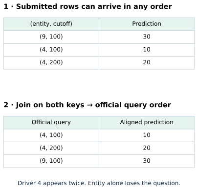
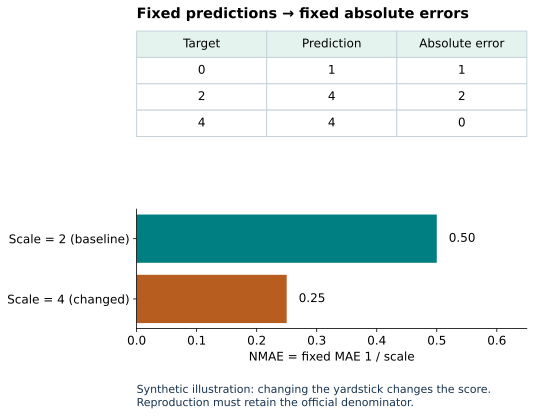
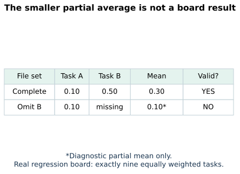
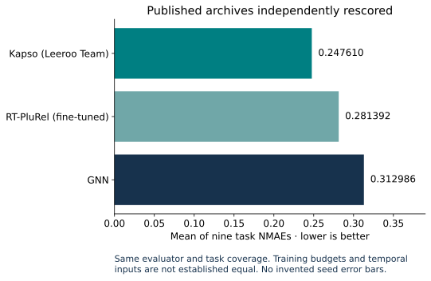
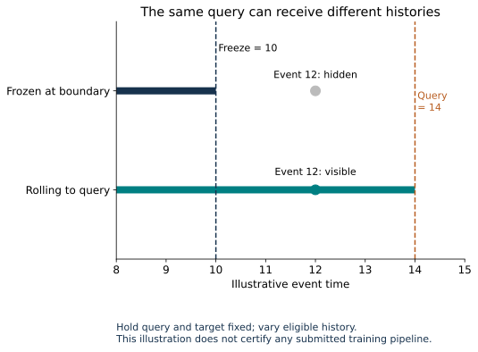
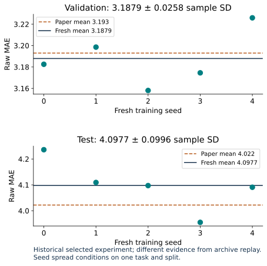

Year 4 · Quarter 2 · Lesson 136
Leaderboard literacy: reproduce the score, audit the setup
A leaderboard number is the last line of an experiment. Your job is to recover the contract behind that line.
Your win: independently reconstruct a leading entry’s regression score, produce a configuration-difference report, and say exactly which parts of its claim you have reproduced.
On a narrow screen, scroll diagrams horizontally to keep their labels readable.
Route: retrieve → align one prediction table → trace normalization → audit board coverage → defend a claim. The core lesson takes about 45–60 minutes. Full author experiments are evidence to inspect; they do not count as your mastery.
Student notebook · Executed reference · Solution notebook · Reference card · Commands and evidence
1 · From a fair search to a defensible comparison¶
Lesson 135 froze a search budget and used validation to select its winner. That protects one experiment. A leaderboard adds a harder question: did the other entry get the same information and resources?
Retrieve before reading: What identifies a temporal query? Which split selects a checkpoint? Does five-seed agreement establish performance on another database?
Check your retrieval
A temporal query is an entity and a prediction cutoff. Validation selects the checkpoint. Five seeds probe fitting variability on the chosen task and split, not variation across databases.Our mission is to make evidence for relational learning credible to a skeptic. Ranking a method is useful only after identifying what was ranked. This lesson therefore carries three separate statements through the same workflow: the score is correct; the training setup is recoverable; the comparison supports the claim. Each needs different evidence.
Read first: the official submission contract. A submission supplies prediction tables. An entire task family must be present before that board is validated. The public rules restrict temporal information and target-database gradient training for in-context entries. They do not impose equal runtime or equal tuning budgets.
In plain terms. A score validator checks the submitted answers. It cannot reconstruct every operation that produced those answers.
We freeze the repository at 584a03d…2841 and the hosted data at d8e976f…8600. The text returned by the leaderboard page said “No entries yet,” while the repository contained populated entries. That discrepancy is a reason to preserve the actual source, date and bytes; it is not evidence that the board has no submissions. Pinned score snapshot.
2 · The first job is identity, not arithmetic¶
A prediction table has keys identifying the question and a value giving the answer. For rel-f1/driver-position, the keys are driverId and date. The same driver appears at multiple cutoffs. Sorting by driver alone cannot recover the intended questions.
Worked example. The official query order is (4,100), (4,200), (9,100). A submitted file orders these as (9,100), (4,100), (4,200) and gives predictions 30,10,20. The correctly aligned vector is 10,20,30. Reordering a valid file must leave the score unchanged.

A bijection here means that every official query has exactly one submitted answer and no answer refers to a foreign query. Reject duplicates instead of dropping them. Reject missing rows instead of scoring an easier subset. Reject nonfinite predictions instead of letting an undefined number pass through an average.
TODO 1 — align_predictions: validate both key sets, then return predictions in official order. Its CHECK includes repeated entities at different dates, duplicates, missing rows, extra rows and NaN. The same function is called on the published F1 predictions later.
def align_predictions(expected_keys, prediction_keys, predictions):
"""Return predictions in official query order after checking a bijection."""
expected=[tuple(k) for k in expected_keys]
supplied=[tuple(k) for k in prediction_keys]
values=[float(v) for v in predictions]
if not expected or len(supplied)!=len(values):
raise ValueError('Empty queries or different key/value counts')
for keys in [expected,supplied]:
if any(not k or any(x is None or (isinstance(x,float) and not math.isfinite(x)) for x in k) for k in keys):
raise ValueError('Missing query key')
if len(set(keys))!=len(keys):
raise ValueError('Duplicate query key; entity alone is not a temporal query')
if set(expected)!=set(supplied):
raise ValueError('Missing or foreign prediction keys')
if not all(math.isfinite(x) for x in values):
raise ValueError('Nonfinite prediction')
lookup=dict(zip(supplied,values))
return [lookup[k] for k in expected]
Prediction before reveal: if two CSV files have the same numbers in a different row order, are their scores necessarily the same?
Reveal after committing
Only if those numbers remain attached to the same entity–cutoff keys. Permuting entire keyed rows preserves the score; permuting values while keeping keys fixed changes the answers.The reference scorer independently uses the pinned upstream key-validation and join functions. Every aligned prediction is compared exactly, not just its final average. Released alignment code.
3 · Know what a unit of error means¶
Mean absolute error (MAE) averages the absolute difference between target and prediction. On finishing position, it is measured in positions. On revenue, it is measured in currency. An arithmetic average of these raw errors has no common unit.
The current regression board uses normalized MAE (NMAE). It divides a task’s MAE by a fixed scale derived from that task’s training targets. The source specifies their sample standard deviation, which uses n−1 in the variance denominator. The evaluator resolves a hosted per-task constant. It never estimates that scale from the submitted predictions. Pinned metric implementation.
In plain terms. First measure the error in the task’s units. Then divide by a fixed training-data yardstick. Lower remains better.
Worked example. Targets [0,2,4] and predictions [1,4,4] have absolute errors [1,2,0]. Their MAE is 3/3 = 1. With training-target standard deviation 2, NMAE is 1/2 = 0.5. Doubling the denominator to 4 makes the score 0.25 without improving any prediction. That is why the denominator belongs in the protocol.

TODO 2 — regression_score: compute MAE and NMAE from paired finite vectors and a finite positive scale. Reject invalid inputs. This function scores all three published F1 files in the notebook and every task in the complete replay operator.
def regression_score(targets, predictions, train_std):
"""NMAE uses the pinned train-target sample SD, never a test-fitted scale."""
y=[float(v) for v in targets];p=[float(v) for v in predictions];scale=float(train_std)
if not y or len(y)!=len(p) or not math.isfinite(scale) or scale<=0:
raise ValueError('Need paired rows and a finite positive train scale')
if not all(math.isfinite(v) for v in y+p):
raise ValueError('Nonfinite target or prediction')
mae=math.fsum(abs(a-b) for a,b in zip(y,p))/len(y)
return dict(mae=mae,nmae=mae/scale,count=len(y))
For F1 the pinned denominator is 7.025733902396073. A historical result of 4.022 MAE would convert to approximately 0.5725 NMAE using that scale. This is a unit conversion, not a reproduction of the current GNN entry.
The audit found a real discrepancy. For rel-stack/post-votes, the hosted constant is 0.5104313497537508; recomputing sample SD from the pinned raw training parquet gives 0.5104212106119147. The difference is small, but changing it would change the scores. We preserve the hosted constant to reproduce the board, record both values, and leave the cause unestablished. A passing prediction replay does not settle the constant’s derivation. Pinned normalization table.
4 · A board is a declared set of tasks¶
The pinned regression board contains nine tasks. Each contributes one ninth of the aggregate, regardless of its number of test queries. This is an arithmetic mean of task NMAEs; it is not a mean of ranks and not a pooled average over every query.
Worked example. Two illustrative tasks have scores 0.1 and 0.5. Their board mean is (0.1+0.5)/2 = 0.3. If the second task is omitted, 0.1 is only a partial mean. It is not a better complete-board result.

TODO 3 — complete_board: require exactly the canonical task names, once each, then compute the equally weighted mean. The complete replay calls it on all nine measured scores for each entry. Missing and extra tasks must fail its CHECK.
def complete_board(scores, canonical_tasks):
"""Equal task weighting is allowed only for exactly the canonical task set."""
tasks=list(canonical_tasks)
if not tasks or len(set(tasks))!=len(tasks) or set(scores)!=set(tasks):
raise ValueError('Incomplete, extra or duplicate board tasks')
values=[float(scores[t]) for t in tasks]
if not all(math.isfinite(v) and v>=0 for v in values):
raise ValueError('Invalid regression score')
return math.fsum(values)/len(values)
The official implementation can print a diagnostic average over available tasks while marking a board incomplete. Our learner function refuses to return a board score in that case. This deliberate interface difference prevents a partial diagnostic from being mistaken for a qualified entry. Board-validation source.
5 · Reconstruct the published numbers¶
Prediction before reveal: which is stronger evidence that a submitted score is correct: reading its displayed aggregate, or matching every query, independently rescoring all tasks, and reconstructing the mean?
We chose the regression leader in the captured repository snapshot, Kapso, plus GNN and RT-PluRel (fine-tuned) as comparison entries. We downloaded their actual submitted prediction archives and the official labels. We held prediction bytes, query identity, task coverage and normalization fixed. We varied only the implementation of alignment and scoring: the lesson’s visible functions versus pinned upstream functions.
Complete archive evaluation replay. Independently rescored **2,480,739 predictions across 27 task-entry pairs. Exact row-alignment agreement with pinned upstream functions; all task scores agree within 1e−10.
| Entry | Recomputed mean NMAE | Tasks |
|---|---|---|
| Kapso (Leeroo Team) | 0.247610406289 | 9/9 |
| RT-PluRel (fine-tuned) | 0.281392037401 | 9/9 |
| GNN | 0.312986490195 | 9/9 |
Full task-by-task audit. These are measured evaluation results from submitted files, not newly trained models.
The three archives are Kapso #393, GNN #380 and RT-PluRel #397. The notebook’s default run directly aligns and rescores all 760 F1 queries for each entry, then reconstructs all three board means from the complete author audit. Its optional full-replay switch downloads and independently rescores every task. Default notebook execution is therefore not a fresh 27-task replay.
Scope check. The recovered rank is conditional on the captured entries and metric. These archives do not contain repeated independent training seeds. Do not invent a seed interval from nine heterogeneous tasks, or describe the archive replay as training Kapso.

6 · Recover the setup before explaining the gap¶
Frozen database means every test query reads from one database snapshot at the test boundary. Rolling-time evaluation means a later query may use later-arriving history, provided it precedes that query’s own cutoff. Both aim to exclude future information, but they provide different histories to late test queries.
Worked example. A model predicts at time 14. A related event happened at 12. A database frozen at 10 hides that event. A strictly past rolling view includes it. The prediction target and scoring rule can remain unchanged while the available input changes.

Kapso’s released evaluation protocol explicitly discusses these regimes and their relevance to F1. This is the authors’ protocol description, not an independent audit of every submitted model. Its documented comparisons and the submitted F1 score are different artifacts; we do not assume they identify the same run.
Configuration-difference report. Use evidence identifiers, not a checkbox saying “same benchmark.”
| Dimension | Historical RDL lane we train | Current submitted-entry replay |
|---|---|---|
| Data identity | Hash-pinned release archives | Revision-pinned hosted task tables and attached CSVs |
| Metric | Raw MAE; five-fit mean and sample SD | NMAE; one score per task, nine-task arithmetic mean |
| Model/trainer | Visible released RDL port, pinned runtime | Submitted answers recoverable; exact generating setup requires separate evidence |
| Selection | First minimum validation checkpoint, ten epochs | Selection procedure cannot be inferred from predictions |
| Temporal inputs | Released frozen database and inclusive node-time sampler | Must audit each entry’s actual feature and cutoff path |
| Search and cost | Fixed default, seeds 0–4, recorded budget | Equal effort not required by board rules |
| Identity claim | Released-protocol selected experiment | Evaluation of submitted files |
A subtle boundary. The historical sampler admits nodes timestamped at or before the root cutoff. The current public rule says information “at or in the future” is off-limits. Preserve the historical source when reproducing it, document the difference, and do not certify those fits as a compliant new leaderboard submission. Equal timestamps and real availability require their own audit.
7 · Fresh training supplies a different kind of evidence¶
To keep full reproduction concrete, we also ran the complete selected RelBench v1 Table 7 basic RDL, rel-f1/driver-position experiment. Every fit uses all 7,453 training queries per epoch, 499 validation queries, 760 test queries, ten epochs, and one of seeds 0–4.
The model is the visible released port used in earlier lessons: typed row features → table-specific Frame encoders plus relative-time encodings → two 128-channel typed GraphSAGE layers → seed-row regression head. It uses sum aggregation, Adam at 0.005, batch size 512, fanouts [128,64], mean absolute training loss, and training-label percentile clipping for evaluation. The notebook includes the model, graph construction, trainer and full-data entrypoint, rather than hiding them behind one import.
Validation chooses the first minimum checkpoint. Its weights are restored before final scoring. Temporal sampling is stochastic, so the selected checkpoint’s replayed validation score can differ slightly from its selection trace; both are saved. Test never chooses a checkpoint. The official test split has been used in previous lessons, so fresh seeds do not create a new untouched test set.
Five fresh full-data fits completed.
| Split | Fresh mean ± sample SD (MAE) | Paper mean | Descriptive verdict |
|---|---|---|---|
| val | 3.187927 ± 0.025788 | 3.193 | CLOSE |
| test | 4.097695 ± 0.099605 | 4.022 | CLOSE |
Independently rescored 6,794 saved pilot/final predictions. Maximum port-versus-original output difference on identical sampled batches: 2.86e-06. Primary measured worker resource estimate: USD 0.0656; invoice total is not itemized. Training audit.
Portable full-training check: PASS. All 22 code cells and five additional full fits ran in an isolated pinned GPU namespace; their 6,295 predictions were independently rescored. They validate the runnable notebook and are not pooled into the primary result. Combined measured worker resource estimate: USD 0.1063. Live Colab and deployment remain NOT_CHECKED.

Independent checks: every saved prediction is rescored; checkpoint hashes are verified; query keys and targets are checked against the released task archive; graph relations are checked through independent SQL joins; the port’s outputs are compared with the original model on the same sampled batches.
Scope check. The inherited
0.2 MAEdescriptive tolerance is descriptive. CLOSE is not statistical equivalence. The historical experiment is not the current GNN submission’s exact run and is not a retraining of Kapso or RT-PluRel. Whole-paper training and top-entry search reproduction remain outside the executed scope.
8 · Write the claim you can defend¶
The deliverable is a short audit, not a screenshot of a rank. Include:
- Identity: entry issue, source/data revisions, prediction hashes, query keys and canonical tasks.
- Measurement: raw error, fixed normalization, per-task scores and aggregate; explain any mismatch.
- Setup difference: one material input, selection, training or budget difference, with evidence.
- Claim boundary: evaluation replay versus training reproduction versus controlled comparison.
EXIT: “We reproduced ___ from ___ under ___. We did not establish ___. Before attributing the score gap to the model, I would hold ___ fixed and measure ___.” Fill the blanks with this lesson’s actual artifacts. Explain why one F1 task cannot qualify a nine-task board.
Return tomorrow: reconstruct the normalization example from memory. In a week, audit another entry without looking at this checklist. For Lesson 137, retain the query keys: they will let you ask where errors concentrate instead of treating one mean as the whole story.
Ask the teaching agent any follow-up question, or paste your EXIT audit for feedback. Author-reference execution is complete evidence preparation; learner mastery remains pending.
Carry this forward. Keep the aligned query keys from your leaderboard audit. Lesson 137 uses them to locate errors that the overall mean hides. Continue to Lesson 137.